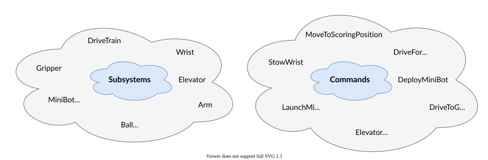

7. Command-Based Programming#
Why it matters#
Imagine writing a whole robot inside teleopPeriodic(): the drivetrain, the intake, the arm, the shooter, every button, every timer, every "only do this if that." It works for a week. Then it's 600 lines of tangled if statements where changing the intake breaks the arm.
Command-based programming organizes the robot into small, reusable pieces:
- Subsystems are the robot's parts (nouns).
- Commands are the things those parts do (verbs).
- Triggers decide when commands run.
Almost every competitive FRC team uses it, and it's what the WPILib template is built for.
Read this#
- What Is Command-Based Programming?
- Subsystems
- Commands
- Binding Commands to Triggers
- Structuring a Command-Based Robot Project
Walkthrough#
The mental model#
| Piece | Grammar | Example | Lives in |
|---|---|---|---|
| Subsystem | Noun | Intake, Arm, Drivetrain |
subsystems/ |
| Command | Verb | "run intake," "move arm to 90°" | factory methods on the subsystem, or commands/ |
| Trigger | When | "while the A button is held" | RobotContainer.configureBindings() |
Only one command can use a subsystem at a time. The scheduler enforces this, so two commands can't fight over the same motor.

Subsystems are the robot's parts; commands are things the robot does with them. From the WPILib docs, What Is "Command-Based" Programming? (CC BY 4.0).
From the WPILib docs: Why command-based?
Command-based programming is declarative: you describe what should happen, and WPILib handles checking for it every loop. For example, "fire the piston when a condition becomes true" is one line:
new Trigger(condition::get).onTrue(Commands.runOnce(() -> piston.set(DoubleSolenoid.Value.kForward)));
Without command-based, you'd have to check the button every loop yourself, and remember whether it was already pressed so the piston only fires once:
if (condition.get()) {
if (!pressed) {
piston.set(DoubleSolenoid.Value.kForward);
pressed = true;
}
} else {
pressed = false;
}
Command-based code tends to be clean, extensible, and easy to reuse from year to year.
Adapted from What Is "Command-Based" Programming?, CC BY 4.0.
What's the scheduler?
The command scheduler is the part of WPILib that runs your commands every 20 ms, checks your buttons, and enforces that one-command rule. This lesson uses it; Lesson 7.1 explains exactly how it works, step by step.
What goes in a subsystem#
A subsystem owns hardware and offers actions. A good subsystem:
- creates its own motors and sensors as
privatefields, so nothing outside can touch them directly - offers methods that read state, like
hasGamePiece()orgetAngle() - offers command factories: methods that return commands, like
runIntake() - puts telemetry in its
periodic()method, which runs every loop
A subsystem should not know about buttons or controllers. "Run the intake" belongs in the subsystem; "when A is pressed" belongs in RobotContainer. Keeping them apart means you can reuse the same intake command in teleop, in autonomous, and in a test.
Build an Intake subsystem#
Create src/main/java/frc/robot/subsystems/Intake.java:
package frc.robot.subsystems;
import edu.wpi.first.wpilibj.DigitalInput;
import edu.wpi.first.wpilibj.motorcontrol.PWMSparkMax;
import edu.wpi.first.wpilibj.smartdashboard.SmartDashboard;
import edu.wpi.first.wpilibj2.command.Command;
import edu.wpi.first.wpilibj2.command.SubsystemBase;
public class Intake extends SubsystemBase {
private final PWMSparkMax motor = new PWMSparkMax(0);
private final DigitalInput beamBreak = new DigitalInput(0);
/** True when a game piece is blocking the beam break sensor. */
public boolean hasGamePiece() {
return !beamBreak.get(); // many beam breaks read false when blocked
}
/** Runs the rollers in. Stops them when the command ends. */
public Command runIntake() {
return startEnd(
() -> motor.set(0.75), // when it starts
() -> motor.set(0.0) // when it ends
).withName("Intake");
}
/** Spits a game piece out. */
public Command outtake() {
return startEnd(() -> motor.set(-0.5), () -> motor.set(0.0)).withName("Outtake");
}
/** Intakes until a game piece is detected, then stops on its own. */
public Command intakeUntilFull() {
return runIntake().until(this::hasGamePiece).withName("Intake Until Full");
}
@Override
public void periodic() {
SmartDashboard.putBoolean("Intake/Has Piece", hasGamePiece());
SmartDashboard.putNumber("Intake/Output", motor.get());
}
}
Why PWMSparkMax?
It works in simulation with no vendor libraries. On the real robot you'll use your vendor's class (TalonFX, SparkMax, etc.). The command-based structure is identical.
Command factories#
The methods startEnd, run, and others come from SubsystemBase. Each one builds a command that automatically requires this subsystem:
| Factory | What the command does | Ends by itself? |
|---|---|---|
runOnce(action) |
Runs action one time |
Yes, immediately |
run(action) |
Runs action every loop |
No |
startEnd(start, end) |
Runs start once, then end once when it stops |
No |
runEnd(action, end) |
Runs action every loop, then end when it stops |
No |
Commands that don't end by themselves keep going until a button is released, another command takes over the subsystem, or you add an end condition.
Changing how a command ends#
Chain these onto any command:
| Decorator | Effect | Example |
|---|---|---|
.until(condition) |
Ends when condition becomes true |
runIntake().until(this::hasGamePiece) |
.withTimeout(seconds) |
Ends after that many seconds | outtake().withTimeout(0.5) |
.unless(condition) |
Doesn't start at all if condition is true |
runIntake().unless(this::hasGamePiece) |
.withName("...") |
Gives it a readable name on the dashboard | .withName("Intake") |
The Commands helpers#
The Commands class has factories for commands that don't belong to one subsystem:
import edu.wpi.first.wpilibj2.command.Commands;
Commands.none() // does nothing (useful as a placeholder)
Commands.waitSeconds(1.0) // waits one second
Commands.print("Got here") // prints a message
Commands.runOnce(() -> System.out.println("hi"))
Binding commands to buttons#
All bindings go in RobotContainer.java, in configureBindings():
public class RobotContainer {
private final Intake intake = new Intake();
private final CommandXboxController driver = new CommandXboxController(0);
public RobotContainer() {
configureBindings();
}
private void configureBindings() {
driver.a().whileTrue(intake.runIntake());
driver.b().whileTrue(intake.outtake());
driver.x().onTrue(intake.intakeUntilFull());
}
}
Read them out loud: "While driver A is held, run the intake." "When X is pressed, intake until full." Good command-based code reads like English.
| Binding | What it does |
|---|---|
whileTrue(cmd) |
Starts on press, cancels on release |
onTrue(cmd) |
Starts on press, runs until it finishes on its own |
onFalse(cmd) |
Starts on release |
toggleOnTrue(cmd) |
First press starts it, second press cancels it |
Use whileTrue with commands that never end on their own, like runIntake(), so the driver controls how long they run. Use onTrue with commands that do end, like intakeUntilFull().
onTrue with a command that never ends
driver.a().onTrue(intake.runIntake()) starts the intake on the first press and never stops it, because runIntake() doesn't end by itself and onTrue doesn't cancel on release. This is one of the most common beginner bugs.
Controller buttons#
CommandXboxController gives you a trigger for every button:
| Method | Button |
|---|---|
a(), b(), x(), y() |
Face buttons |
leftBumper(), rightBumper() |
Bumpers |
leftTrigger(), rightTrigger() |
Analog triggers, pressed past halfway |
povUp(), povDown(), povLeft(), povRight() |
D-pad |
start(), back() |
Menu buttons |
getLeftX(), getLeftY(), getRightX(), getRightY() |
Stick positions, -1 to 1 (not triggers) |
Combining triggers#
Triggers can be combined, and any true/false check can be a trigger:
// Only while both are held
driver.a().and(driver.rightBumper()).whileTrue(intake.runIntake());
// Automatically, whenever a game piece arrives
new Trigger(intake::hasGamePiece).onTrue(Commands.print("Got one!"));
Longhand command classes#
Factories cover most commands. For a command with more logic, you can write a full class in the commands/ folder. It has four methods the scheduler calls for you:
public class RunIntake extends Command {
private final Intake intake;
public RunIntake(Intake intake) {
this.intake = intake;
addRequirements(intake); // "this command uses the intake"
}
@Override public void initialize() { /* once, at the start */ }
@Override public void execute() { /* every loop */ }
@Override public boolean isFinished() { return false; } // checked every loop
@Override public void end(boolean interrupted) { /* once, at the end */ }
}
Lesson 7.1 explains exactly when each of these runs.
Try it#
Have the test bed?
Lab 1: Spin a Brushless Motor builds this same pattern on real hardware, and Lab 3: Buttons and Triggers tries every kind of binding.
- Build the
Intakesubsystem above in your project - Bind A to
runIntake()and B toouttake()withwhileTrue - Run in Sim GUI. Drag your keyboard or a controller into Joystick 0 and watch PWM[0] change as you press buttons.
- Bind X to
intakeUntilFull()withonTrue. In the Sim GUI, toggle DIO[0] to fake a game piece arriving and watch the command end. - Change A's binding to
onTrue(intake.runIntake()). What happens when you release A? Change it back. - Add an
outtake().withTimeout(0.5)binding on Y, so one tap spits a piece out for half a second
Check yourself#
What's the difference between a subsystem and a command?
A subsystem is a part of the robot that owns hardware (the intake). A command is an action that uses one or more subsystems (run the intake).
Why shouldn't a subsystem know about controller buttons?
So its commands can be reused anywhere: teleop bindings, autonomous routines, and tests. Button choices belong in RobotContainer.
What's the difference between whileTrue and onTrue?
whileTrue runs the command while the button is held and cancels it on release. onTrue starts it once on press and lets it finish on its own.
How do you make runIntake() stop automatically once a game piece is detected?
Add .until(intake::hasGamePiece).
Two commands that both require Intake are scheduled at the same time. What happens?
By default the newer command interrupts the older one, and the older one's end action runs. Lesson 7.1 covers the details.